SMITE
la batalla entre dioses
HOU YI
el arquero (dios novio de la luna china)

En un tiempo pasado, ocurrió una calamidad inesperada. De donde nadie sabía, diez soles se alzaron sobre el horizonte. Esa luz y ese calor incesantes devastaron la tierra, marchitaron los campos de cereales, secaron los ríos e incluso derritieron el metal forjado. Doblados bajo los rayos abrasadores, la gente rogó al Emperador-Dios Di Jun que los ayudara. En respuesta, llamó al gran arquero, Hou Yi. Armado con un místico arco rojo y un carcaj de flechas blancas, Hou Yi viajó a la Tierra. Lo que encontró fue una tierra estéril. Protegiéndose los ojos, miró hacia el cielo donde los diez soles se encendieron cruelmente. Apuntando la flecha al arco, Hou Yi lanzó una advertencia a los soles con la esperanza de ahuyentarlos, pero permanecieron impasibles. Así que Hou Yi volvió a dibujar y disparó un tiro mortal. Atravesado, el sol estalló en color y un cuervo rojo gigante con tres patas cayó al suelo, asesinado por la flecha blanca. Ocho veces más, Hou Yi dibujó una flecha en la mejilla. Ocho tiros más dejó volar. Ocho estallidos más rasgaron el cielo y ocho cuervos más cayeron muertos. Pero un sol se fue, y tan temeroso del tiro con arco de Hou Yi, este sol se comportó, sumergiéndose bajo el horizonte. Ahora, armado con el poder de los cuervos rojos, derrotó, enviando luz y fuego contra aquellos que amenazan el mundo, ya sea monstruo o bestia, dragón o sol, hombre o Dios, Hou Yi es el Defensor de la Tierra.


CHANG E
La Mujer de la Luna (diosa de la luna china)

No siempre nacidos en el crisol de la creación, a veces los dioses ascienden por una trágica casualidad. Tal es la historia de Chang'e, Diosa de la Luna. Entre los inmortales que vivían en los Cielos, Chang'e era la bailarina más elegante, como una paloma en las corrientes azotadas por el viento. Atrajo el afecto del héroe arquero, Hou Yi, y los dos pronto se casaron. Todo era perfecto. Sin embargo, debajo de los Cielos, no todo estaba bien. Diez soles, los diez hijos del Emperador de Jade, se levantaron para abrasar la tierra y hervir los mares. El valiente Hou Yi, con el arco en la mano, disparó a nueve desde el cielo, salvando solo a uno. Aunque el mundo se salvó, el Emperador de Jade estaba furioso porque sus hijos fueron asesinados. Como castigo, Hou Yi y Chang'e fueron hechos mortales. Chang'e se puso melancólico y no bailó más. Para restaurar su estatus en los Cielos, Hou Yi encontró el Elixir de la Inmortalidad, pero los ladrones vinieron a robarlo mientras él estaba cazando. Chang'e luchó por ocultar el Elixir, pero, al final, se vio obligado a beberlo. Demasiado para una sola persona, el Elixir le dio la inmortalidad, pero también la elevó al cielo. Desde entonces, Chang'e ha vivido en la luna, sin poder ver a su esposo, un Conejo de Jade como su único compañero. Sin embargo, la Tierra vuelve a estar en peligro y Chang'e se encuentra en la superficie mortal. Tal vez, esta es una segunda oportunidad. Si tan solo pudiera salvar el mundo sin enojar al Emperador de Jade, por fin podría reunirse con su esposo. Sin embargo, la Tierra vuelve a estar en peligro y Chang'e se encuentra en la superficie mortal. Tal vez, esta es una segunda oportunidad. Si tan solo pudiera salvar el mundo sin enojar al Emperador de Jade, por fin podría reunirse con su esposo. Sin embargo, la Tierra vuelve a estar en peligro y Chang'e se encuentra en la superficie mortal. Tal vez, esta es una segunda oportunidad. Si tan solo pudiera salvar el mundo sin enojar al Emperador de Jade, por fin podría reunirse con su esposo.


Ao Kuan
Majestuoso, poderoso, el Dios-Dragón del Mar del Este domina las tormentas y las mareas con el movimiento de una garra, pero hierve de rabia por las humillaciones pasadas.
Ultimas notas del parche
-
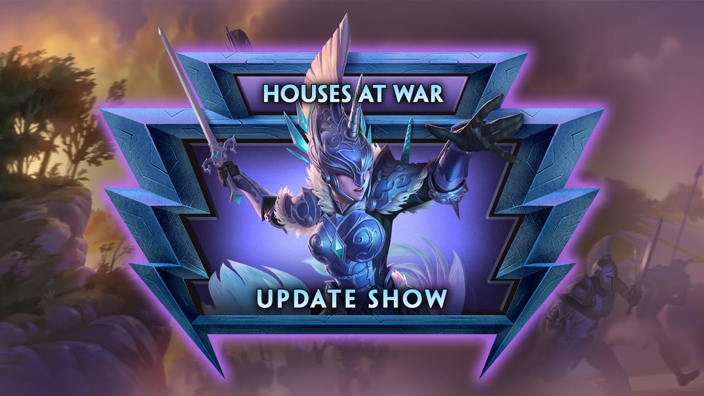
Casas en Guerra | 9.9 Notas de actualización
-
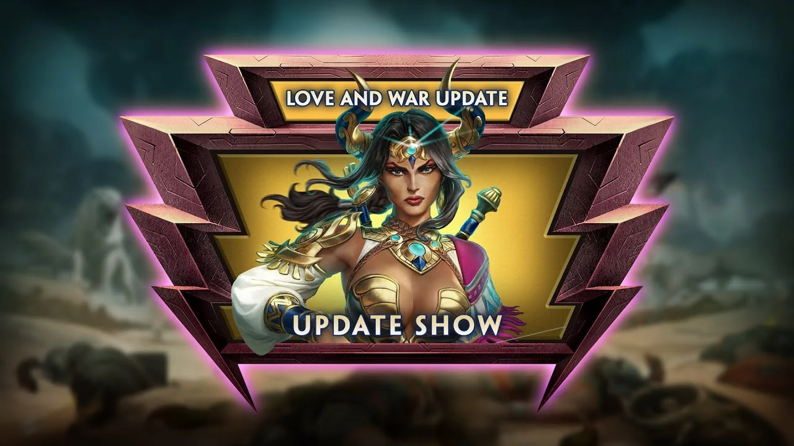
Amor y Guerra | 9.8 Notas de actualización
-
.jpg) Temporada Media | 9.7 Notas de actualización
Temporada Media | 9.7 Notas de actualización
-
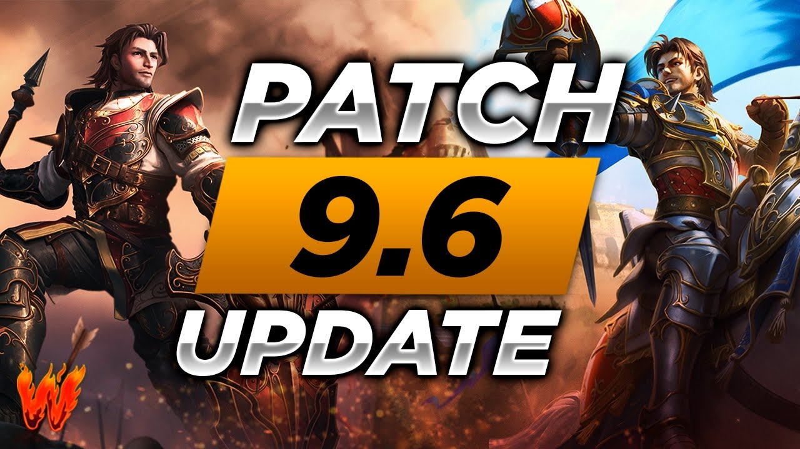
Mesa Redonda | 9.6
MODOS DE JUEGO
Conquista
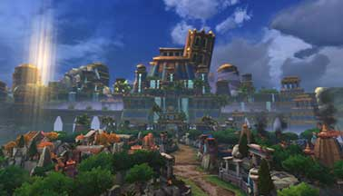
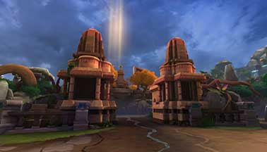
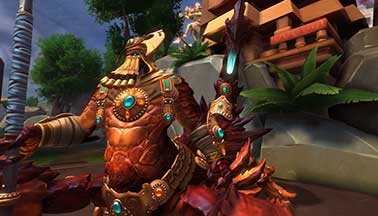
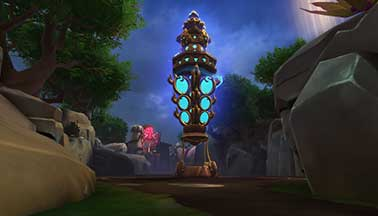
Arena
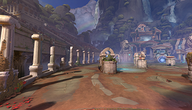
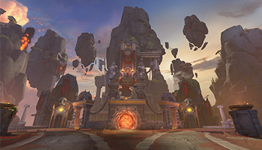
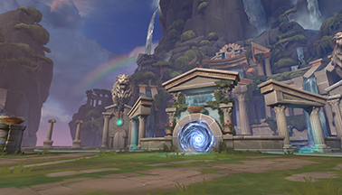
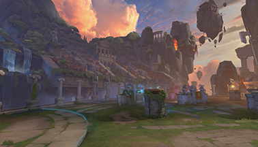